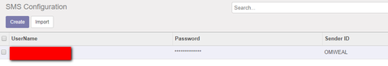

Use Dynasoft SMS API, with our module. To use our solution first visit SMS configration, and configure SMS creditial. we had put SMS button on CRM pipeline so, you can send sms to your leads / schedule sms to your leads.

|  | Schedule SMS
|
|---|
Use Dynasoft SMS API, with our module. To use our solution first visit SMS configration, and configure SMS creditial. we had put SMS button on CRM pipeline so, you can send sms to your leads / schedule sms to your leads. |
|
|---|


Powered by Apanet Solutions |
Assosiated with Dynasoft SMS API |
|---|---|
 |